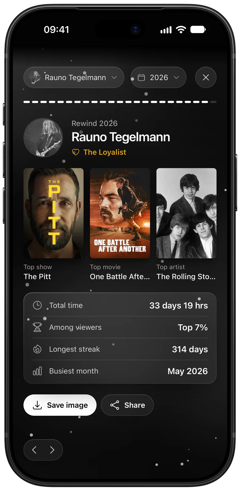
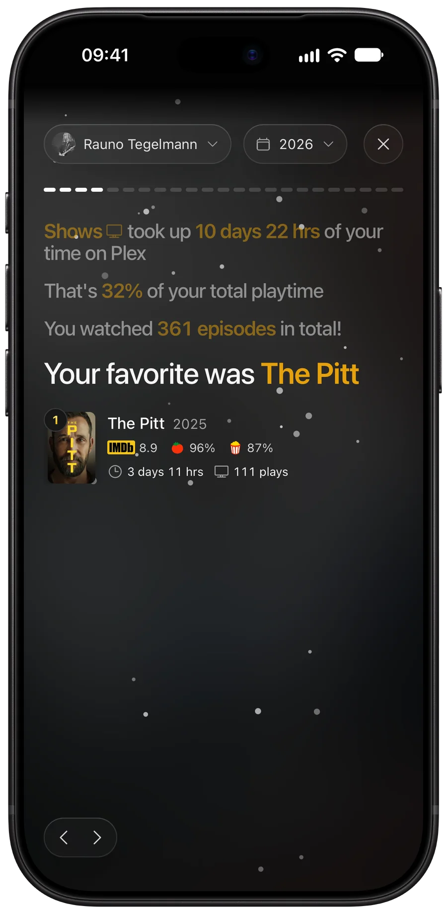
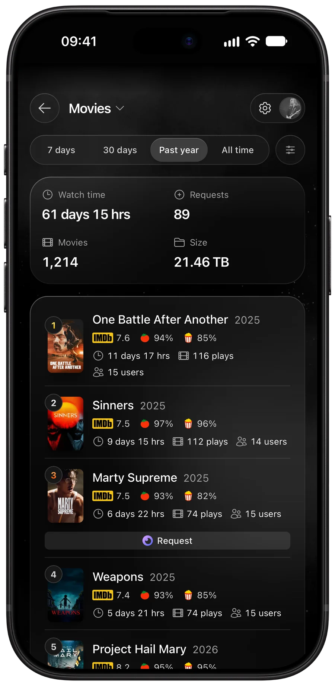
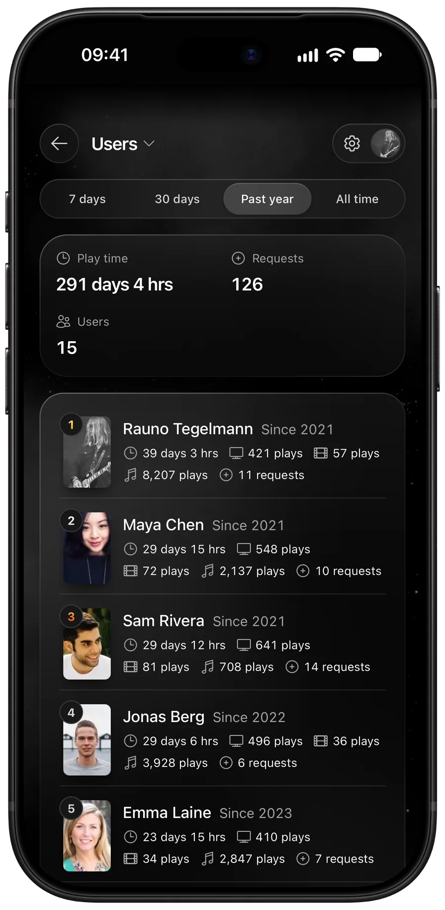
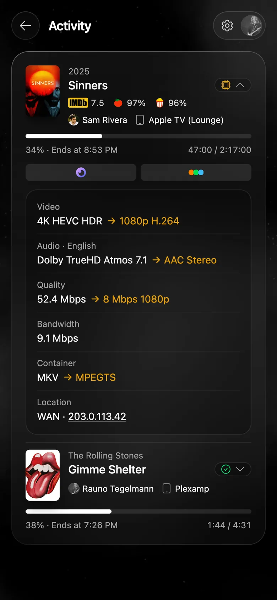
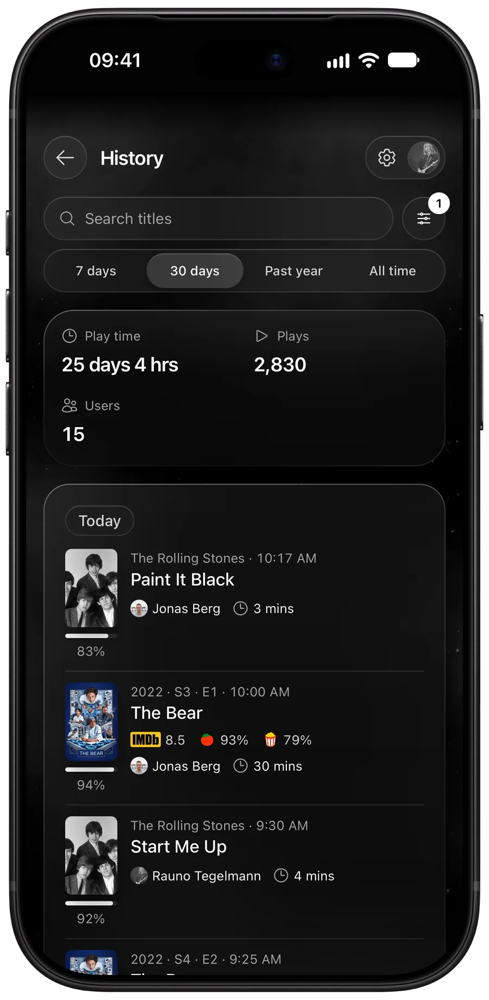

Easy sign-in
Users sign in with their Plex account or Jellyfin Quick Connect.
Stories for everyone on your Plex or Jellyfin server, plus a dashboard, live activity and history. Self-hosted, free and open source.
Rewind
Each user steps through their year one stat at a time.


Dashboard
The most watched movies, shows and music, and who's watching the most, from now back to day one.


Activity and history
See who's watching or listening right now, with progress and stream details: quality, direct play or transcode, and bandwidth. Then browse and search past plays and requests.


Features
Users sign in with their Plex account or Jellyfin Quick Connect.
Anonymise other users, keep pages for admins only, or open the dashboard to guests without a login.
Fits everything from phones to desktops, and can be added to your home screen.
Statistics come from your live play history, read once and then kept topped up as new plays arrive.
English (UK and US), Estonian, French, German, Italian and Spanish, following each user's browser language.
A single Docker image for amd64 and arm64, set up entirely in the browser.
Add Seerr for request totals and request buttons.
Install
docker-compose.yml wherever you keep your
services.
docker compose up -d.http://localhost:8383 and connect your server in
the setup.
services:
rewindarr:
image: ghcr.io/raunot/rewindarr:latest
container_name: rewindarr
environment:
- TZ=Europe/London
volumes:
- ./config:/app/config
ports:
- 8383:8383
restart: unless-stoppedSee the README for optional settings and how to update.
If it brings joy to your server, you can support it.